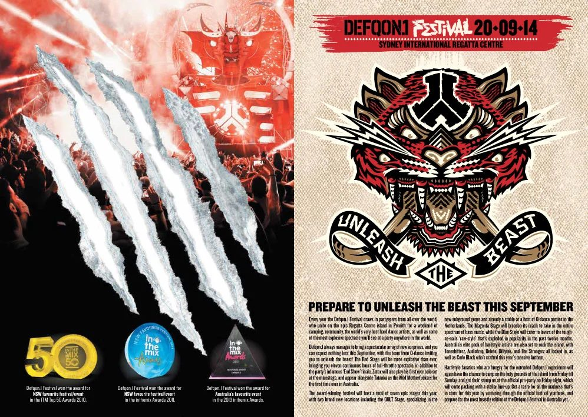
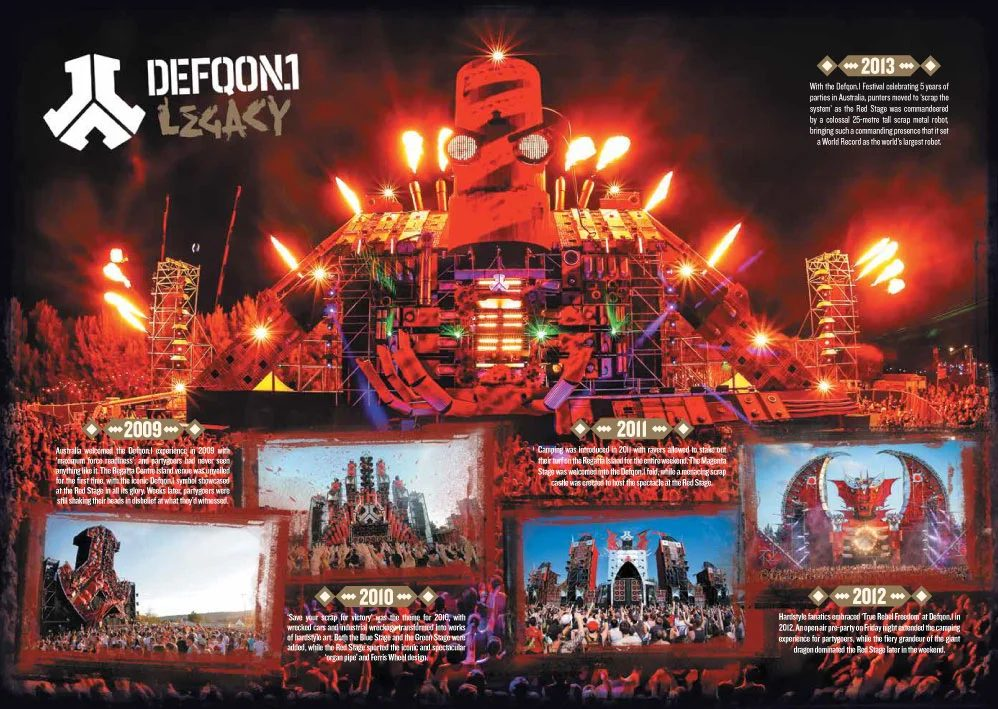
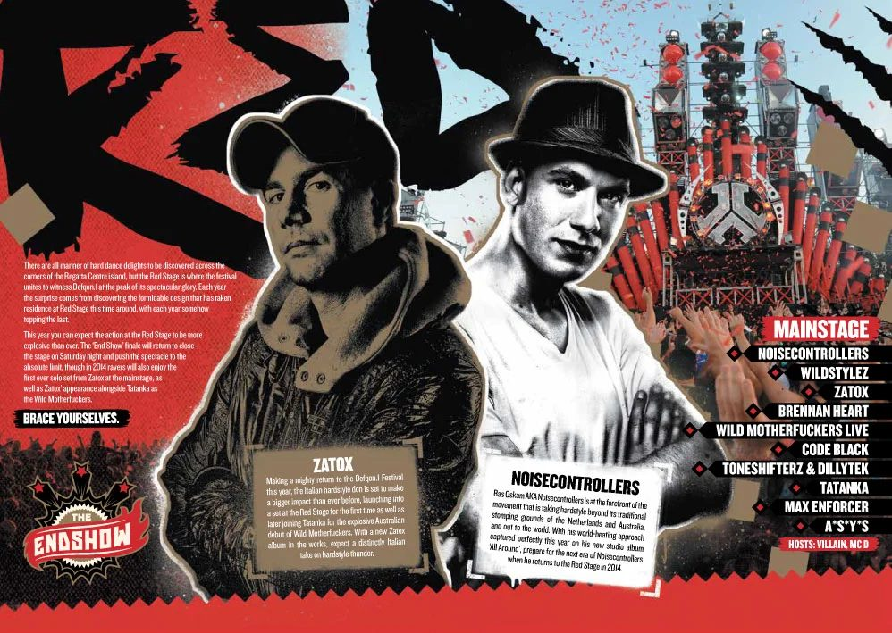
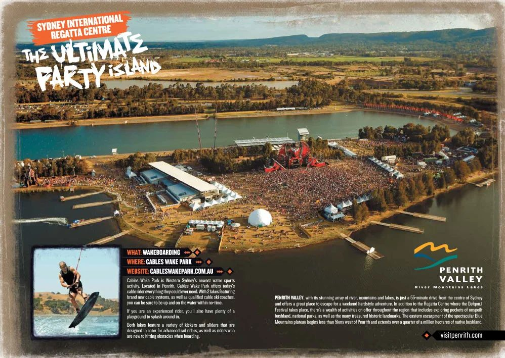

Defqon.1 promo
Producing high-impact copy and marketing content for some of the world's biggest music events, working closely with the promoters to help them translate their high-concept ideas into impactful copy.
{kind=link}

Since 2010 I’ve worked annually with promoters Qdance Australia on their Defqon.1 Festival that hosts 30,000 people every September at the Sydney International Regatta Centre, a spectacular man-made island venue that was constructed originally for the 2000 Sydney Olympics.
{kind=link}

Each year I’ve helped the promoters behind the Defqon.1 Festival develop copy that is consistent with the event and its long-running brand, as well as helping produce marketing content (both print and online).
{kind=link}

This involves developing copy that properly reflects the brand, and the strength of its relationship with its 30,000 annual audience, as well as interviewing and profiling the international music talent that performs at the event.
{kind=link}

Additional copy responsibilities involve helping develop informative promotional material that discussing the logistics of the three-day event. Camping, transport, additional recreational activities etc.